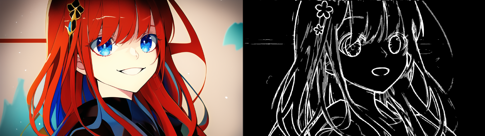
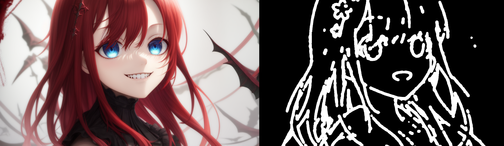

Как пользоваться control Pictur
(только для бота @NovelAIDraw_bot)
С февраля месяца, в боте Creation AI появилась такая кнопка
после нажатия на эту кнопку, бот попросит вас прислать фотографию/картинку. На этой картинке, бот будет угадывать границы объектов или персонажей, а затем генерировать изображение с учётом этих границ.
для наглядности и сравнения результатов генерации, я буду использовать одну картинку в качестве "исходника
(исходник для генераций)
а в качестве тегов и модели, буду использовать следующее: masterpiece, best quality, Girl, red hair, red eyes, wicked smile, dark clothes.
model: Anime4 (AnythingV5)
1.Генерация по фото
Итак, после загрузки картинки, бот покажет четыре кнопки:
нижние думаю вам интуитивно понятны (удалить картинку и подтвердить настройки) Теперь касательно двух верхних: при выборе функций, крайне важно соблюдать “пару” между preprocessor и processor сейчас объясню почему: Preprocessor будет указывать, какой режим нужно применить на загруженной картинке. Говоря проще, какую “маску” должна сделать нейросеть. Processor будет ПРИМЕНЯТЬ полученную маску, для генерации своего изображения, с учетом тегов пользователя. то есть выбрав Canny в первом, вы также должны выбрать Canny во втором.
ПРЕДУПРЕЖДЕНИЕ: После загрузки картинки, бот самостоятельно поправит размер картинки в настройках, не рекомендую уменьшать или увеличивать размер, иначе результат генерации будет хуже.
1.1 Режим работы
Теперь поговорим поподробнее про preprocess:
всего их здесь 35 штук (не считая none, так как оно выключает preprocess).
это список кнопок в process
1.2 Результаты генераций:
Ниже я покажу сгенерированный результат, а правее будет маска, которая получилась после работы preprocess. в скобках будет название кнопки в process.
1 Canny(canny-v1.1)
depth(depth-v1.1)
depth_zoe (process: depth-v1.1)
hed(softedge-v1.1)
hed_safe (softedge-v1.1)
hed (softedge-v1.1)
Openpose(и все остальные с этой приставкой)
для следующего режима, нужно изменить исходник из за близкого расстояния бот не может угадать позу персонажа) для того чтобы изменить исходную картинку нужно нажать “del control picture” ( а для смены режима работы controlnet “Edit control picture”
На этот раз загрузим вот такую стоковую картинку
затем в preprocess и process выбираем openpose
Openpose(openpose-v1.1)
как видите, результат иногда выходит хуже. Обычно это происходит из за того что бот не смог угадать объект на картинке. Решением такой проблемы будет либо переключение модели обработки, либо замена исходной картинки.
Openpose_hand (process: openpose-v1.1)
Для этого режима, я выбрал модель Anime3 (CamelliaMix) так как у нее лучше и чаще всего получаются “правильные” пальцы/руки
openpose_face/faceonly/full я оставлю для следующего гайда, в котором подробнее разберу все режимы openpose, здесь я лишь показал возможности этой функции
Pidinet (softedge-v1.1)
теги и исходник те же что в начале гайда
pidinet_safe (softedge-v1.1)
pidinet_sketch (softedge-v1.1)
pidinet_scribble (softedge-v1.1)
scribble_xdog (scribble-v1.1)
scribble_hed (softedge-v1.1)
segmentation(seg-v1.1)
oneformer_coco (seg-v1.1)
oneformer_ade20k (seg-v1.1)
normal_bae (normalbae-v1.1)
lineart (lineart-v1.1)
lineart_coarse (lineart-v1.1)
lineart_anime (lineart anime-v1.1)
lineart_standard (lineart-v1.1)
shuffle (process: shuffle-v1.1)
2. Генерация по маске
Наконец то мы подошли к интересному. На картинках выше вы видели арт и маску рядом, так было сделано для вашего удобства, чтобы вы могли сравнить. А теперь самое интересное: эти маски можно использовать повторно, если допустим вы хотите использовать определённую позу персонажа, или протестировать другие теги с фиксированной позицией объектов (персонаж выглядывающий из за угла стены, или приветствующий зрителя, примеров может быть бесконечно)
для того чтобы использовать маску, достаточно отправить ее вместо картинки после нажатия на control picture (Контроль картинки, если у вас бот на русском языке.) и выбрать preprocess: none (тут он не нужен, потому что мы уже загрузили боту маску) process необходимо выставить в соответствии с загруженной маской (если маска от canny, то выбирайте canny) в остальном: теги, модель, выборка, и т.д в вашем распоряжении, однако менять размеры не рекомендуется, бот всё равно отрисует в границах маски, а вот за его пределами всё будет однотонным цветом.
Для теста, я взял маску canny, и изменил теги. Теперь у меня фиолетово-волосая девочка с зелеными глазами.
Результат:
Как видите, сохранилась поза персонажа, и все остальное, кроме конечно же образа. В общем, подобрав подходящую маску, вы можете генерировать разных персонажей, сохраняя при этом определённые детали.
Лайфхак:
А что если вам не нравится определённая деталь на фотографии? К примеру, вам понравится сидящий персонаж, но вон тот меч в углу вам не подходит? Можно отредактировать маску. Просто закрасьте черным цветом ту область, которая не подходит для вашей задумки, а если вы владеете художественными навыками, то и вовсе можете дорисовать свои детали.
Результат:

На маске справа, я затер фоновые детали, а также убрал открытый рот. из за удаления этих деталей, бот нарисовал некую комнату с окном на фоне. А рот теперь нарисован закрытым ( я забыл написать какой нибудь тег для этого)
Это будет работать с такими масками как canny, hed,pidinet, scrible, и вариациями lineart.
ВЫВОД
В целом, это довольно интересная возможность генерировать картинки с определёнными объектами, или персонажами. И даже если потребуется более тонкий результат, можно отредактировать маску, затерев или добавив деталей для получения "качественной" картинки
К сожалению я показал вам лишь около половины моделей, потому что все остальные не имеют нужных иструментов для работы. Так что не советую их выбирать ибо в таком случае вы в пустую потратите генерацию.
Однако, некоторые из них не работали, а другие требовали дополнительной модели для работы (чего не было у бота).
На этом у меня собственно всё! Я постарался затронуть больше режимов, и показать результаты генераций, не меняя настроек. чтобы вы для себя сравнили результаты.
Всего вам доброго! Удачных генераций! Гайд писал @ZeroHuk0